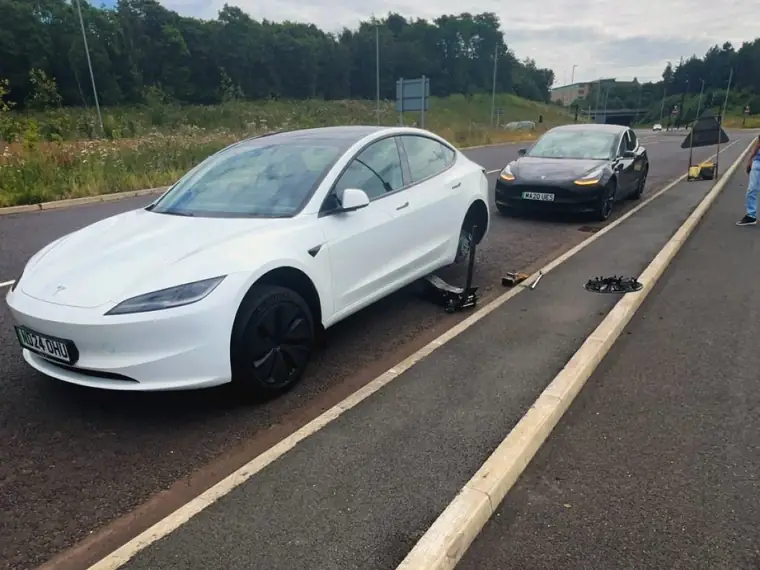

Flat tyre or blowout?
We come to you, 24/7
Call now07438 562633
- With you in about 40 minutes on average
- No call-out fee, day or night
- 5.0 from 230+ Google reviews

★★★★★“Fantastic service. We had my brother’s tyre replaced in less than an hour from me calling — which I didn’t think was possible on a Sunday. Super value for money. Very reliable. Highly recommend.”
Jenny McManus · Google review
What happens when you call
Tell us your tyre size (or read the number off the sidewall) and where you are.
Tyres from £40, fitting from £50: one tyre fitted from £90. You'll know the price before we set off, and there's no obligation to go ahead.
At the roadside, your home or your workplace. You pay when the job's done.
Quick answers
Tyres start from £40 each for 14–17 inch wheels and from £80 for 18–20 inch, plus mobile fitting from £50 per tyre. There's no separate call-out fee, and the price is the same day or night. We confirm the exact price by phone before we set off.
Leeds and West Yorkshire, including Wakefield, Castleford and Pontefract. We also cover Harrogate and Tadcaster.